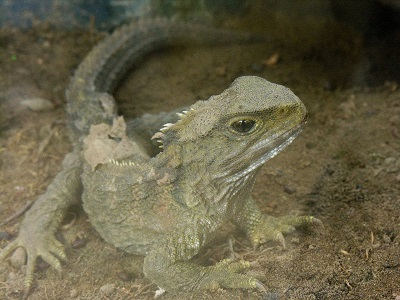

Teknősök
A teknősök (Testudines vagy Chelonia), régiesen teknősbékák vagy teknőcök a hüllők (Reptilia) osztályának egy monofiletikus rendje. Jellegzetességük a mellkas és medenceöv csontjaiból összeforrt, dobozszerű páncél, mely minden más gerincestől megkülönbözteti őket.
Wikipedia
Felemásgyíkok
A felemásgyíkok (Rhynchocephalia vagy Sphenodontia) a hüllők (Reptilia) osztályába tartozó rend. Külsejük a gyíkokéra emlékeztet, de belső felépítésük különféle más rendek, sőt osztályok bélyegeit hordozza. A rendbe a gyakran „élő kövületként” aposztrofált hidasgyíkok.
Wikipedia
Pikkelyes hüllők
A pikkelyes hüllők (Squamata) a hüllők osztályába tartozó rend. Közös jellemzőjük, hogy testüket pikkelyek, fejüket és hasoldalukat pedig pajzsok fedik. A felső szájpad olyan, hogy az orrlyukak a szájüreg legelején nyílnak. Megközelítőleg 7600 faj tartozik a rendhez.
Wikipedia
Krokodilok
A krokodilok (Crocodylia) a hüllők osztályába tartozó egyik rend. Ma élő legközelebbi rokonaik a madarak. A krokodilok a hüllők osztályának Archosauromorpha alosztályágába tartoznak, legközelebbi rokonaik az Aetosauria, Phytosauria, Rauissuchia rendek.
Wikipedia